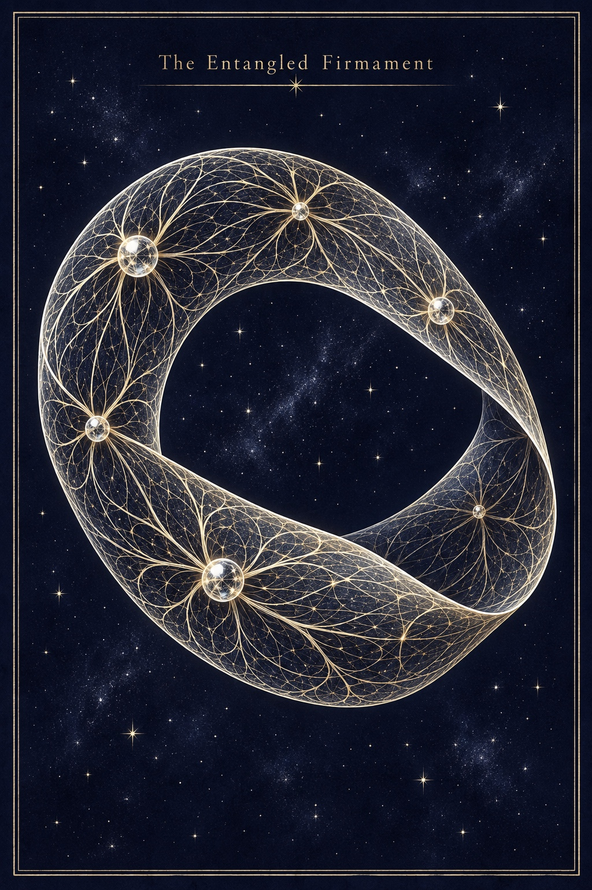

Part VII
Chapter 38: Living from the Void
Estimated reading time: 9 min
The journey into the Void returns to the world—more intimate, more honest, more awake.
The question is no longer only what you touched there, but what that spaciousness makes possible in the world: how you time a boundary, answer a message, face rupture honestly, and stay present inside the ordinary.
The anchor for that return is the Serene Center—grounded enough that vastness can pass through without carrying you away.
Less choice, diminished relational capacity, or difficulty re-grounding after Void contact is the signal to set advanced work aside. Return to grounding and turn to experienced, grounded support.
The Serene Center is where infinite depth has to learn the manners of a finite life.
The Void loosens the knots between event, meaning, identity, and response. What happened still matters. The body still remembers. Consequences remain. But the story no longer has total authority over the next movement. The points are still there; they no longer have to become the old constellation.
This is the gift of spaciousness: not escape from action, but wider agency within action. More room before reaction. More choice inside relationship. Better timing when force rises. More tenderness without collapse. Between stimulus and script, wound and reply, longing and grasping, an interval opens.
Let this unfold at the cadence your body can trust. Finite body, infinite depth: one ordinary life asked to hold both.

Return to Ordinary Life
To live from the Void is to let contact alter timing, boundary, and conduct under ordinary conditions.
Each inhale promises another. Each exhale reminds you that you are one breath closer to the last. Feel each inhale as the kiss of life from within, and each exhale as the gift of love returned.
Eat, walk, rest. Let the nervous system catch up before deciding what the experience meant. A familiar task or one sensory touchstone can help restore orientation.
Later, a friend brings bread. You sit outside, talk about a broken gate, and laugh at a story neither of you remembers quite correctly. The afternoon passes without becoming a lesson. Its pleasure needs no further use.
Where something does need attention, it can be met plainly: “I can do Friday; tonight I need to rest.” Wider agency includes being able to leave the practice behind and become absorbed in life again.
Embodying the Dragon in Action
Living from contact with the Void lets the Dragon’s wisdom become practical: power with poise, fire held in presence. From your center, you can act without bypassing, hold boundaries without closing, and let love remain embodied.
The Oneness Shadow
Unintegrated charge can cast a dangerous shadow when unity language outruns ethical discernment. The Oneness Shadow is the Ethical Shadow in mystical dress: influence without accountability, spirituality used to outrank sovereignty, and insight recruited to dodge repair.
Its hard mask says, “I am God, so ordinary rules do not apply to me.” Its softer mask pressures someone to forgive, reconnect, or “rise above” before a boundary has fully formed.
True embodied Void contact can heighten ethical responsibility. Felt interconnectedness can make impact immediate and visceral, bringing another person’s pain close. Using non-duality to turn away from that pain is bypass, even when the opening was real.
If you notice yourself or another person using non-duality to bypass repair, minimize impact, or cross boundaries, stop advanced Void Meditation work. Return to grounding tools, and bring in a steady, trustworthy person before proceeding.
Light, Shadow, and Fire
The Dragon does not leave shadow behind at the threshold. What still flinches in you after the glimpse will reappear in speech, conflict, desire, and self-protection.
Notice the fear, the hidden demand, the wish to be exempt. Meet it through journaling, active imagination, or honest conversation with the part that surfaced. The shadow still needs relationship after the silence.
Dragon’s Fire is integrated life-force, not spectacle. It moves through work, desire, speech, and creation, and remains answerable to the body and the bond. Pausing amid passion brings attention to breath, tone, and timing, so the fire can serve what matters rather than become an excuse to override it.
Regular practice, brief daily silence, and timely re-centering keep that fire steerable.
When Stillness Is Tested
Common edges are simple to name:
- Existential disorientation: Old beliefs crack open, and for a time the world can feel strange, unstable, or hard to read.
- Emotional upheaval: Old emotion, grief, or inherited atmosphere surfaces with force. Meet the feeling slowly; do not let its story decide for you.
- Relational difficulty: You may feel alone among people who do not share your language for the experience.
- Integration overwhelm: Vastness can be hard to bring back into ordinary tasks, speech, and timing.
What helps is equally plain:
- Feet, breath, and one small act: Put your feet on the floor, lengthen the exhale, and do one ordinary thing that tells the nervous system you are here.
- Stay kind without drifting: Offer yourself the patience you would offer someone just back from deep water. Name what is here, slow down, and keep one point of contact with the room around you.
- Reach for steady support: When isolation sets in, reach for grounded community or one trusted person. Use simple words, and let relationship do its quiet work.
- Let the weather pass: Avoid major decisions while disoriented. Let body and mind settle before deciding what the opening means.
What Takes Root
Void contact deepens by degrees. Further practice remains optional.
If you deepen this work, extend meditation gradually and end while you still have energy and orientation. Keep using the body anchors from the Dragon’s Plunge, and pair Void Meditation with Shadow Work, archetype integration, and embodiment so insight becomes conduct.
Over time, this work can loosen old loops, free trapped creativity, and make intuition quieter and more trustworthy.
Keep asking how contact with the Void is changing you.
- What has shifted in your body, your choices, and your relationships?
- Where are you tempted to bypass consequence, boundaries, or a necessary ending?
- What helps you re-center when stressed?
- What is one honest next step you can take now?
Creativity, Intuition, and Healing from the Core
Void contact can reopen creativity, intuition, and healing by loosening contraction and restoring live contact with sensation, image, and choice.
Sometimes that looks very plain: a melody arriving without strain, the right sentence appearing after sleep, an old grief loosening enough that breath can move through it.
- Creativity: Create from the quiet center; let one small form emerge. Stop before you deplete your system.
- Intuition: Listen for subtle signals when you are regulated. Treat “knowing” as a hypothesis you test gently, especially when stakes are high.
- Healing: Let stillness soften what grips. Hold yourself (and others) with presence without trying to fix, rescue, or bypass.
The Void and the Firmament in Relationships
Void contact reshapes how you relate—to other people, to community, and to the Entangled Firmament where self, other, and consequence meet. When this contact ripens into ordinary life, spaciousness and interconnection become lived realities rather than distant ideals.
Void-tempered presence deepens commitments around power, boundaries, and responsibility rather than replacing them. Unity does not erase difference; it teaches you to meet it without collapsing.
- Seeing the other without projection: Void contact can thin the reflex to turn other people into symbols. A steady center helps us meet the human in front of us rather than our projections. Clarity does not erase their impact, history, or actual experience.
- Embracing differences: Unity does not erase distinction. The distinct contour of another life deserves respect even where it challenges us; difference can deepen contact rather than threaten it.
- Communicating from the heart: Honest speech begins with sensation and impact rather than performance. A precise sentence can bridge sovereign worlds by naming what happened, what it stirred, what matters, and what you are asking.
- Navigating conflict with compassion: Conflict asks what needs to change. A slower conversation may help; a breached boundary needs protection. Repair what can be repaired. If unity-talk starts blurring consent or consequence, return to the boundary before you return to the bond.
- Forgiveness and release: Seen from the Void, resentment may first reveal a swallowed no, grief, or boundary. Listen for that truth before trying to release anything. Forgiveness may loosen a loop, but it is neither required for release nor a demand for reunion, renewed access, or a softened boundary.
- Clean Severance: When continued contact requires self-betrayal, coercion, or false reconciliation, distance can hold the truth. An unsafe encounter can end immediately. Responsibility for one’s own harm remains and can be addressed afterward through safer means; it does not require renewed direct contact.
- Intimacy as a practice of meeting: When two beings meet anchored in inner stillness, closeness can deepen without erasing difference. Boundaries soften without collapsing, and unity and uniqueness are both felt at once.
Drawing on practices such as Hoʻoponopono requires cultural humility. Any use here is Dragon-inspired adaptation, not a teaching of a traditional lineage.
Sacred eros asks even more precision: touch the wider field together only while each person stays anchored in their own body, their own no, and their own power to stop.
Leadership and Service from Stillness
If this work enters leadership, facilitation, or service, let it be tested there.
As vision expands, consent, pacing, feedback, and accountability have to deepen with it. Void-tempered leadership means feeling the field without claiming ownership of it.
- Stillness before action: A wise leader listens before reaching. Decisions arise from spacious clarity rather than grasping and stay answerable to what is actually happening in the room.
- Service without self-erasure: Service creates conditions for others to unfold without demanding sacrifice or collapse. Boundaries remain strong; helping someone stand is not the same as merging with them.
- Vision under accountability: Inspiration may come from touching deeper fields of possibility, but it must submit to consent, feedback, pacing, and consequence. What cannot survive those is not wisdom yet.
Echoes of Infinity in Everyday Life
The Dragon is not a distant myth here. It can arrive as integrated capacity, archetypal guidance, or a clear “no” that keeps you safe—a quiet wingbeat inside the ribs, poise arriving before action. However it appears, it strengthens agency rather than replacing it.
Old loops may become easier to recognize before they fully take you. The pause appears earlier, as if one stitch has loosened. Thoughts branch; attention prunes; each choice changes the next iteration. Use that widening for patience, not prophecy.
The Serene Center holds the widening: feet, breath, a clear yes or no. It gives vastness a finite body.
The Return from the Void
For some, the work opens a wider seam of possibility and returns as a living anchor. For others, it brings a quieter nervous system and a little more space around experience; this, too, is complete. Intense visions are optional. Moving slowly still belongs to the work.
If re-entry brings turbulence, return to breath and orientation before deciding what the opening means.
From Stillness to Pattern
Whatever opened in the silence,
its beauty need not earn its place.
Life still calls you back.
Into speech.
Into timing.
Into an ordinary life:
how you answer a message,
make breakfast,
hold a boundary,
meet rupture without self-betrayal,
and stay with yourself when the old pattern returns.
The
Void may widen the sky.
But life is where the widening must learn to walk.